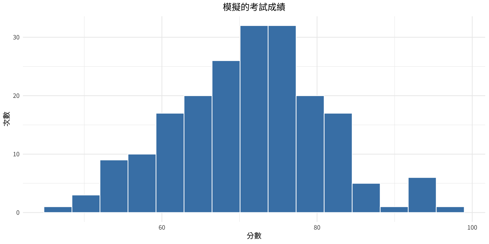

母體平均數（參數） 樣本平均數（統計量）
15.01470 14.81155 統計學
第1章：機率與統計的本質
劉昱佑
實踐大學
2026-07-20
本章概覽
第1章介紹統計學的基本性質——統計學是什麼、處理哪些類型的資料、資料如何收集，以及統計結果可能被如何正確使用或誤用。
| 節次 | 主題 |
|---|---|
| 1-1 | 敘述統計與推論統計 |
| 1-2 | 變數與資料類型 |
| 1-3 | 資料收集與抽樣方法 |
| 1-4 | 觀察性研究與實驗性研究 |
| 1-5 | 統計的使用與誤用 |
| 1-6 | 電腦與統計軟體 |
第1-1節：敘述統計與推論統計
什麼是統計學？
統計無所不在——運動紀錄、民意調查、醫學研究、失業率、天氣預報。這一切都始於資料：被收集下來、必須先經過整理才能透露訊息的數值。
統計學
統計學是一門透過研究來收集、組織、彙整、分析資料並從中得出結論的科學。
學習統計的三個理由：
- 能閱讀並理解日常生活與專業領域中的研究、圖表與統計主張。
- 能進行研究——設計研究、分析資料、正確地傳達結果。
- 成為更精明的消費者與公民——能分辨數字何時提供資訊、何時誤導大眾。
基本詞彙
變數與資料
- 變數是可以取不同值的特徵或屬性。
- 資料是變數所取的值（測量值或觀測值）。
- 一組資料值構成資料集；其中每個個別的值稱為資料值（datum）。
- 取值由機遇決定的變數稱為隨機變數。
例如，「血型」是一個變數；從25名新兵記錄到的 A、B、AB、O 是資料；這25個值的完整清單就是資料集。
母體與樣本
在大多數研究中，調查每一個研究對象通常不切實際，有時甚至不可能。因此研究者只研究其中一個子群體，再加以推廣。
母體與樣本
- 母體是研究中所有研究對象（不限於人）的全體。
- 樣本是從母體中選出、用來代表母體的子群體。
代表性
只有當樣本能代表母體時——理想上以機遇（隨機）方法抽得——由樣本得出的結論才值得信賴。如何取得這樣的樣本，是第1-3節的主題。
統計學的兩大分支
敘述統計
敘述統計包含資料的收集、組織、彙整與呈現。它描述「現況」——由實際觀測到的資料計算出的平均數、百分比、表格與圖形。
推論統計
推論統計包含從樣本推廣到母體、進行估計與假設檢定、判斷變數間的關係，以及進行預測。
機率與假設檢定
推論統計建立在機率論之上。
- 機率是特定事件發生的可能性——描述不確定性的數學語言（第4章）。
- 假設檢定是根據樣本資訊，對母體主張進行評估的決策程序（第8章）。
推論統計也研究變數間的關係（例如：吸菸與肺癌有關嗎？），並進行預測（例如：由民調預測選舉結果）。由於樣本永遠無法包含完整資訊，每個推論結論都帶有不確定性——而機率正是用來量化這種不確定性的工具。
範例 1-1
敘述統計還是推論統計？
判斷下列每個敘述屬於敘述統計還是推論統計。
- 史上最大的五次樂透頭獎平均為3.67億美元。
- 預估到2040年，全球人口將超過90億。
- 一項醫學研究指出，每天喝一杯咖啡可能降低心臟病風險。
- 上學期本課程有12%的學生獲得A等成績。
- 根據1,200位選民的民調，預測林候選人將獲得54%的選票。
範例 1-1
解題
解題
| 敘述 | 分支 | 理由 |
|---|---|---|
| 1 | 敘述統計 | 彙整實際觀測到的資料（一個平均數） |
| 2 | 推論統計 | 對未來、尚未觀測之值的預測 |
| 3 | 推論統計 | 從研究樣本推廣到所有人 |
| 4 | 敘述統計 | 由完整紀錄計算出的百分比 |
| 5 | 推論統計 | 以樣本（1,200位選民）估計母體的值 |
詮釋
只要數字僅僅彙整觀測到的資料，就是敘述統計；只要它超越資料本身——預測、推廣或檢定主張——就是推論統計。
範例 1-2
用 R 認識母體、樣本與推論
某大學有10,000名學生。我們想知道全體學生（母體）每週平均讀書時數，但只能調查其中50人（樣本）。請在 R 中模擬此情境，並比較樣本平均數與母體平均數。
範例 1-2
解題
解題
範例 1-2
解題
詮釋
樣本平均數（統計量）接近但不完全等於母體平均數（參數）。利用統計量對參數下結論，正是推論統計的核心。
第1-2節：變數與資料類型
變數的分類
變數有兩種互補的分類方式：依測量性質（質性 vs. 量化），以及量化變數再依可能取值細分（離散 vs. 連續）。
| 質性變數 | 類別：性別、血型、宗教信仰、居住地區 |
| 量化——離散 | 可數的值：子女數、來電次數、班級人數 |
| 量化——連續 | 測量的值：身高、體重、溫度、時間 |
質性變數與量化變數
質性變數
質性變數可依某種特徵或屬性歸入不同類別。其本質是非數值的（即使以數字編碼，例如郵遞區號）。
量化變數
量化變數是數值型的，可以排序或排名。對它們進行算術運算（求平均、相減）是有意義的。
一個實用的判斷法：這些值的平均有意義嗎？身高的平均有意義；郵遞區號的「平均」則沒有——郵遞區號雖由數字組成，仍屬質性變數。
離散變數與連續變數
離散變數
離散變數的取值可以計數——有限多個值，或可一一列舉的序列（0、1、2、3、…）。例如：來電次數、家庭子女數。
連續變數
連續變數在任意兩個特定值之間可以取無限多個值。它們經由測量取得，常包含小數。例如：溫度、身高、體重、時間。
範例 1-3
為每個變數分類
將下列變數分類為質性或量化；若為量化，再進一步分類為離散或連續。
- 學生一天傳送的簡訊則數
- 一個2公升瓶中的水量
- 學生的血型
- 跑完100公尺所需的時間
- 每小時通過收費站的車輛數
- 停車場中汽車的顏色
範例 1-3
解題
解題
| 變數 | 類型 | 細分 |
|---|---|---|
| 1. 每日簡訊則數 | 量化 | 離散（可計數） |
| 2. 瓶中水量 | 量化 | 連續（測量而得） |
| 3. 血型 | 質性 | — |
| 4. 100公尺所需時間 | 量化 | 連續（測量而得） |
| 5. 每小時車輛數 | 量化 | 離散（可計數） |
| 6. 汽車顏色 | 質性 | — |
詮釋
依序問兩個問題：它是具有意義算術運算的數值嗎？ 若否，為質性。若是，它是計數還是測量而得？ 計數 → 離散；測量 → 連續。
連續變數的界限
由於測量工具的精確度有限，連續資料必須四捨五入。因此一個記錄值實際上代表一個真值區間。
界限規則
記錄值的界限為記錄值上下各半個測量單位：
\text{界限} = \text{記錄值} \pm \tfrac{1}{2}\,(\text{測量單位})
| 記錄值 | 測量單位 | 界限 |
|---|---|---|
| 86 °F | 度 | 85.5 – 86.5 °F |
| 15 ml | 毫升 | 14.5 – 15.5 ml |
| 1.6 kg | 0.1公斤 | 1.55 – 1.65 kg |
| 3.18 s | 0.01秒 | 3.175 – 3.185 s |
範例 1-4
求測量值的界限
求下列各測量值的界限。
- 病人體溫，記錄為38.6 °C（精確到0.1度）
- 包裹重量，記錄為12 kg（精確到1公斤）
- 短跑成績，記錄為9.58秒（精確到0.01秒）
範例 1-4
解題
解題
| 記錄值 | 單位 | 下界 | 上界 |
|---|---|---|---|
| 38.60 | 0.10 | 38.550 | 38.650 |
| 12.00 | 1.00 | 11.500 | 12.500 |
| 9.58 | 0.01 | 9.575 | 9.585 |
詮釋
每個記錄值實際上代表其界限之間的區間。界限是第2章建立分組次數分配時的關鍵概念。
四種測量尺度
除了依類型分類，變數也可依其值所攜帶的資訊量分類。
測量尺度
- 名目尺度——互斥且無次序的類別（性別、郵遞區號、眼睛顏色）。
- 順序尺度——可以排名的類別，但名次之間的差距沒有意義（等第成績、評審名次、S/M/L）。
- 區間尺度——有次序且差距相等而有意義，但沒有真正的零點（華氏或攝氏溫度、智商）。
- 比率尺度——具備區間尺度的性質，且有真正的零點，因此比值有意義（身高、體重、薪資、時間）。
四種尺度的比較
| 尺度 | 有次序？ | 差距相等？ | 有真零點？ | 例子 |
|---|---|---|---|---|
| 名目 | 否 | 否 | 否 | 血型、國籍 |
| 順序 | 是 | 否 | 否 | 等第（A–F）、滿意度 |
| 區間 | 是 | 是 | 否 | 溫度（°C）、智商 |
| 比率 | 是 | 是 | 是 | 身高、體重、收入 |
0 °C 並不表示「沒有熱」——所以40 °C 不是 20 °C 的「兩倍熱」（區間尺度）。但0公斤確實表示沒有重量，40公斤是 20公斤的兩倍（比率尺度）。
範例 1-5
判斷測量尺度
判斷下列各變數的測量尺度。
- 籃球員的球衣號碼
- 網球選手的排名（第1、第2、第3、…）
- SAT 分數
- 新生兒體重
- 課程評量回覆：差／尚可／良好／優異
- 攝氏體溫
範例 1-5
解題
解題
| 變數 | 尺度 | 理由 |
|---|---|---|
| 1. 球衣號碼 | 名目 | 數字僅是標籤 |
| 2. 網球排名 | 順序 | 次序有意義；名次差距無意義 |
| 3. SAT 分數 | 區間 | 差距相等；無真零點 |
| 4. 新生兒體重 | 比率 | 有真零點；比值有意義 |
| 5. 評量回覆 | 順序 | 有排序的類別 |
| 6. 攝氏體溫 | 區間 | 0 °C 不代表「沒有溫度」 |
詮釋
測量尺度決定哪些統計方法是合法的——例如，計算平均數至少需要區間尺度的資料。
測量尺度在 R 中的對應
R 透過資料型態區分這些尺度：
Factor w/ 4 levels "A","AB","B","O": 1 4 3 2 Ord.factor w/ 4 levels "poor"<"fair"<..: 1 3 4 num [1:3] 36.5 37 38.2名目資料對應無次序的 factor，順序資料對應有序因子（ordered factor），區間／比率資料則以 numeric 儲存。
第1-3節：資料收集與抽樣方法
資料如何收集？
資料來源眾多：調查、既有紀錄（檔案與資料庫）、直接觀察與實驗。其中以調查最常見，主要有三種方式：
| 調查方式 | 優點 | 缺點 |
|---|---|---|
| 電話訪問 | 成本低；受訪者較坦率 | 排除沒有電話的人；語氣可能影響回答 |
| 郵寄問卷 | 涵蓋範圍廣；具匿名性 | 回收率低；問題可能被誤解 |
| 面對面訪談 | 可取得深入的回答 | 成本高；可能有訪員偏誤 |
資料也可以透過查閱既有紀錄或直接觀察情境取得。
為什麼要抽樣？
研究整個母體（普查）通常不可能或不切實際：
- 母體往往太大，無法一一調查。
- 檢測可能具破壞性（把每輛車都拿去撞擊測試，就沒有車了）。
- 時間、金錢、人力等資源有限。
若要做出有效推論，樣本應該是無偏的——以機遇方法選出。以下介紹四種基本方法，並以一份500名學生的名冊在 R 中示範。
隨機抽樣
隨機樣本
隨機樣本的選取方式使母體中每個成員被選中的機會均等——通常使用亂數。
過去使用亂數表進行，如今由軟體產生亂數。
系統抽樣
系統樣本
系統樣本先將母體編號1至 N，隨機選定起點後，每隔 k 個選取一個，其中 k \approx N/n。
[1] 33 83 133 183 233 283 333 383 433 483注意：若母體名單存在與 k 吻合的週期性規律，樣本可能嚴重偏差。
分層抽樣
分層樣本
分層樣本先將母體依某特徵劃分為層（strata），再在每一層內隨機抽樣。如此可確保每個子群體都有代表。
群集抽樣
群集樣本
群集樣本先將母體劃分為既有的群集（班級、街區、學校），隨機選出整個群集，並調查所選群集的全部成員。
[1] 14 5
5 14
20 20 群集抽樣方便又省錢，但同一群集的成員往往彼此相似，可能降低代表性。
其他抽樣方法
便利樣本
便利樣本使用隨手可得的對象——某家商場的顧客、自願上網填答的人。若該群體恰好具代表性，結果或許可接受，但便利樣本通常有偏。
| 方法 | 核心概念 | 主要風險 |
|---|---|---|
| 隨機抽樣 | 人人機會均等 | 需要完整的母體名單 |
| 系統抽樣 | 每隔 k 個取一個 | 隱藏的週期性規律 |
| 分層抽樣 | 各層內隨機抽樣 | 須事先知道分層資訊 |
| 群集抽樣 | 選出整個群集的全部成員 | 群集內部可能同質 |
| 便利抽樣 | 隨手可得的對象 | 偏誤 |
範例 1-6
辨識抽樣方法
指出下列各情境使用的抽樣方法。
- 某市10家醫院中隨機選出3家，調查這些醫院的所有護理師。
- 品管工程師檢驗生產線上每第100瓶產品。
- 民調機構用亂數產生器，從所有登記電話號碼中選出1,000個。
- 某大學分別從大一、大二、大三、大四各隨機抽出50名學生進行調查。
- 記者在車站入口訪問路過的民眾。
範例 1-6
解題
解題
| 情境 | 方法 | 線索 |
|---|---|---|
| 1 | 群集抽樣 | 選出整家醫院；院內所有人都調查 |
| 2 | 系統抽樣 | 每第100件 |
| 3 | 隨機抽樣 | 使用亂數；機會均等 |
| 4 | 分層抽樣 | 在各年級內隨機抽選 |
| 5 | 便利抽樣 | 恰好路過的人 |
詮釋
關鍵問題是：選的是群體還是個人？是否使用機遇？是在子群體內抽選，還是抽選整個子群體？
第1-4節：觀察性研究與實驗性研究
觀察性研究
觀察性研究
在觀察性研究中，研究者僅觀察正在發生或已經發生的事，並據以得出結論——不介入、不指派處理。
優點： 在自然情境中進行；可利用既有紀錄；可研究無法或不應人為指派的變數（吸菸、天然災害）。
缺點： 無法確立因果關係；易受干擾變數影響；既有紀錄可能有誤。
實驗性研究
實驗性研究
在實驗性研究中，研究者操弄一個變數（處理），並測量其對另一變數的影響，理想上以隨機分派將受試者分組。
關鍵詞彙
- 自變數（解釋變數）——研究者操弄的變數。
- 應變數（結果變數）——作為結果被測量的變數。
- 處理組——接受處理；控制組——不接受處理（可能接受安慰劑）。
隨機分派使兩組具有可比性，因此結果的差異可以歸因於處理——實驗能夠確立因果關係。
干擾變數與其他效應
干擾變數
干擾變數會影響應變數，卻無法與自變數的影響分離。例如：若運動者同時也改變了飲食，飲食就干擾了運動對減重的效果。
兩個著名的行為效應：
- 安慰劑效應——受試者僅因相信自己正在接受治療而改善。對策：讓控制組服用無效的安慰劑。
- 霍桑效應——受試者僅因知道自己被研究而改變行為（最早記錄於霍桑工廠，1924–1932）。
範例 1-7
觀察性還是實驗性？
判斷下列各研究屬於觀察性還是實驗性。若為實驗性，指出自變數與應變數。
- 研究者比較吸菸者與非吸菸者的肺癌發生率。
- 受試者被隨機分派飲用0、1或2杯咖啡，然後測量反應時間。
- 社會學家查閱人口普查紀錄，研究1990到2020年家庭規模的變化。
- 病人被隨機給予新藥或安慰劑，8週後記錄血壓。
範例 1-7
解題
解題
| 研究 | 類型 | 自變數 | 應變數 |
|---|---|---|---|
| 1 | 觀察性 | —（吸菸並非被指派） | — |
| 2 | 實驗性 | 咖啡杯數 | 反應時間 |
| 3 | 觀察性 | —（既有紀錄） | — |
| 4 | 實驗性 | 新藥 vs. 安慰劑 | 血壓 |
詮釋
關鍵問題在於研究者是否指派了解釋變數的值。有指派（且隨機化）→ 實驗性；僅觀察 → 觀察性。
在 R 中進行隨機分派
將20名受試者隨機分派到處理組與控制組：
| 組別 | 受試者 |
|---|---|
| 處理組 | 1, 2, 4, 5, 7, 8, 10, 17, 18, 20 |
| 控制組 | 3, 6, 9, 11, 12, 13, 14, 15, 16, 19 |
隨機化能同時平衡看得見與看不見的變數，這正是因果結論得以成立的原因。
第1-5節：統計的使用與誤用
統計可能誤導
統計誤用幾乎都落在少數幾種固定模式裡。認識它們，能同時保護身為讀者與製作者的你：
- 可疑的樣本
- 含糊的平均數
- 偷換主題
- 無所依附的統計量
- 暗示性關聯
- 誤導性圖形
- 有缺陷的調查問題
可疑的樣本與含糊的平均數
可疑的樣本。 樣本夠大嗎？是用機遇方法選的嗎？「受訪醫師中有四分之三推薦X品牌」——如果只訪問了四位醫師，或他們是自願受訪者，這個主張毫無價值。
含糊的平均數。 平均數、中位數、眾數、全距中點這四種統計量都可以被籠統地稱為「平均」（第3章）。寫作者可以挑選對自己論點最有利的那一個。所得報導常引用平均數（被少數高所得者拉高），而中位數呈現的故事低調得多。
偷換主題與無所依附的統計量
偷換主題。 同樣的事實、不同的數字：政治人物說支出「只增加3%」；對手說支出「增加了600萬元」。兩者可能都是真的——百分比與絕對數值給人的印象截然不同。
無所依附的統計量。 沒有基準的比較：「本止痛藥見效快四倍。」 比什麼快四倍？沒有參照點的主張無從評估。
暗示性關聯與有缺陷的調查問題
暗示性關聯。 含糊措辭悄悄夾帶因果：「吃魚可能有助於降低膽固醇。」「可能有助於」其實什麼都沒保證，但讀者記住的是「吃魚降膽固醇」。
有缺陷的調查問題。 措辭的微小改變就能翻轉結果：
- 「你贊成削減浪費的政府計畫嗎？」 vs.
- 「你贊成削減諸如健保與教育的計畫嗎？」
問題的順序、帶有立場的字眼與社會期許，都會使自填式回答產生偏差。
範例 1-8
誤導性圖形
兩個可樂品牌的市占率分別為45%（A品牌）與47%（B品牌）——僅相差2個百分點。請將同一筆資料畫兩次：一次使用截斷的縱軸，一次使用從零開始的正確縱軸，並比較兩者給人的印象。
範例 1-8
範例 1-8
範例 1-8
解題
詮釋
兩張圖畫的是完全相同的數字，但截斷的縱軸讓B品牌2個百分點的領先看起來像壓倒性優勢。閱讀圖形時務必檢查：
- 數值軸是否從零開始？
- 軸上的刻度是否等距？
- 圖像符號是否被以面積／體積而非高度縮放（常見的誇大手法）？
第1-6節：電腦與統計軟體
電腦的角色
過去需要手搖計算器與紙本附表耗時數小時的統計計算，如今瞬間完成。常見工具包括繪圖計算機、Excel、MINITAB、SPSS——以及本課程全程使用的 R 語言。
機器不會思考
軟體只會執行被要求的計算。使用者仍須選擇正確的方法、檢查其假設，並詮釋輸出結果。電腦會毫不猶豫地替你算出毫無意義的「郵遞區號平均數」。
初識 R
本課程的一切——表格、圖形、模擬、檢定——都由像下面這樣的簡短 R 程式產生：
初識 R

摘要
| 概念 | 核心想法 |
|---|---|
| 敘述統計 | 收集、組織、彙整、呈現資料 |
| 推論統計 | 從樣本推廣到母體 |
| 母體 vs. 樣本 | 全體對象 vs. 具代表性的子群體 |
| 質性 vs. 量化 | 類別 vs. 有意義的數值 |
| 離散 vs. 連續 | 計數的值 vs. 測量的值 |
| 測量尺度 | 名目、順序、區間、比率 |
| 抽樣方法 | 隨機、系統、分層、群集（與便利） |
| 觀察性 vs. 實驗性 | 僅觀察 vs. 操弄並隨機分派 |
| 統計的誤用 | 可疑樣本、含糊平均數、誤導圖形等 |
關鍵區別
重要區別
\text{界限} = \text{記錄值} \pm \tfrac{1}{2}\,(\text{測量單位})
- 敘述統計彙整觀測所得；推論統計推廣到觀測之外。
- 參數描述母體；統計量描述樣本。
- 區間尺度沒有真零點；比率尺度有。
- 只有實驗（含隨機分派）能確立因果關係。
第1章：關鍵詞彙
- 統計學——收集、組織、彙整、分析資料並從中得出結論的科學
- 變數／資料／資料集——特徵、其觀測值，以及這些值的集合
- 母體／樣本——所有研究對象 vs. 實際研究的子群體
- 敘述 vs. 推論——描述資料 vs. 從樣本推廣
- 質性／量化；離散／連續——變數的兩階段分類
- 名目／順序／區間／比率——四種測量尺度
- 隨機／系統／分層／群集——四種基本的機遇抽樣方法
- 觀察性 vs. 實驗性——只有隨機化實驗能支持因果主張
- 誤用——可疑樣本、含糊平均數、無所依附的統計量、誤導性圖形
版權聲明
版權聲明。 本教學材料改編自 Bluman, A. G. (2011). Elementary statistics: A step by step approach (8th ed.). McGraw-Hill。所有版權歸原作者及出版商所有。
僅限非商業用途。 本材料嚴格用於教育目的，不得用於商業利益或盈利。
適當引用。 任何複製、散佈或使用本材料時，必須對原始來源提供適當引用。

Elementary Statistics: A Step by Step Approach